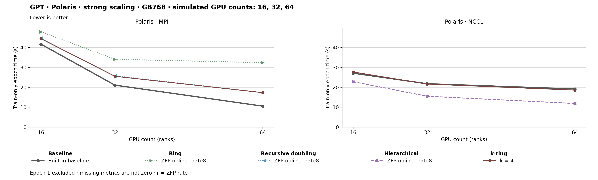

The figure uses lines. Methods use colors, line styles and markers. The metric is Train-only epoch time (s). Polaris · MPI, GPU count (ranks) 16: Built-in baseline has the lowest plotted value, 41.670. Polaris · MPI, GPU count (ranks) 32: Built-in baseline has the lowest plotted value, 21.100. Polaris · MPI, GPU count (ranks) 64: Built-in baseline has the lowest plotted value, 10.550. Polaris · NCCL, GPU count (ranks) 16: Hierarchical · ZFP online · rate8 has the lowest plotted value, 22.820. Polaris · NCCL, GPU count (ranks) 32: Hierarchical · ZFP online · rate8 has the lowest plotted value, 15.530. Polaris · NCCL, GPU count (ranks) 64: Hierarchical · ZFP online · rate8 has the lowest plotted value, 11.885. Epoch 1 is excluded. Values are medians; when repeated runs are available the selected repeat policy is median. These are not confidence intervals across repeated jobs. Missing or unrecorded metrics are omitted, not set to zero.
| Panel | GPU count (ranks) | Method | Value | Runs |
|---|---|---|---|---|
| Polaris · MPI | 16 | none | 41.67 | 1 |
| Polaris · MPI | 16 | kring_k4 | 44.43 | 1 |
| Polaris · MPI | 16 | recursive_doubling_zfp_online_coll:8 | 44.69 | 1 |
| Polaris · MPI | 16 | ring_zfp_online_coll:8 | 47.89 | 1 |
| Polaris · MPI | 32 | none | 21.1 | 1 |
| Polaris · MPI | 32 | kring_k4 | 25.55 | 1 |
| Polaris · MPI | 32 | recursive_doubling_zfp_online_coll:8 | 25.79 | 1 |
| Polaris · MPI | 32 | ring_zfp_online_coll:8 | 34.09 | 1 |
| Polaris · MPI | 64 | none | 10.55 | 1 |
| Polaris · MPI | 64 | kring_k4 | 17.33 | 1 |
| Polaris · MPI | 64 | recursive_doubling_zfp_online_coll:8 | 17.36 | 1 |
| Polaris · MPI | 64 | ring_zfp_online_coll:8 | 32.39 | 1 |
| Polaris · NCCL | 16 | none | 27.1 | 1 |
| Polaris · NCCL | 16 | hierarchical_zfp_online_coll:8 | 22.82 | 1 |
| Polaris · NCCL | 16 | kring_k4 | 27.71 | 1 |
| Polaris · NCCL | 32 | none | 21.81 | 1 |
| Polaris · NCCL | 32 | hierarchical_zfp_online_coll:8 | 15.53 | 1 |
| Polaris · NCCL | 32 | kring_k4 | 21.64 | 1 |
| Polaris · NCCL | 64 | none | 19.165 | 1 |
| Polaris · NCCL | 64 | hierarchical_zfp_online_coll:8 | 11.885 | 1 |
| Polaris · NCCL | 64 | kring_k4 | 18.605 | 1 |